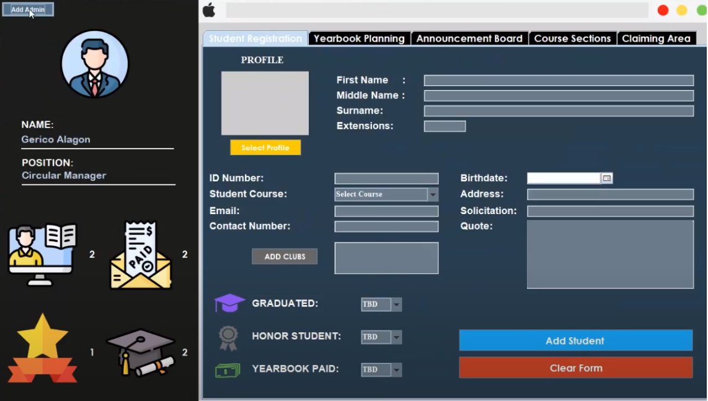
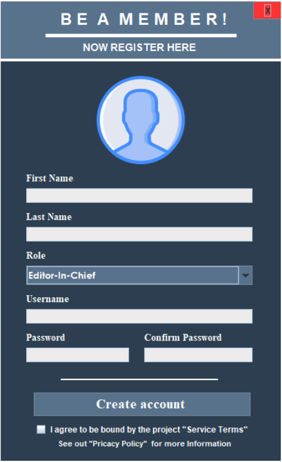

03 · UNIVERSITY PROJECT · VOYAGER YEARBOOK
Yearbook Management.
A centralized management system for handling student records, yearbook content, submissions, and production-related data in one platform.

THE WORKFLOW
One place for yearbook operations.
The system is structured around the practical work of a yearbook organization: registering authorized users, maintaining student profiles, coordinating planning and announcements, grouping records by course section, and supporting the claiming process.
Its desktop interface prioritizes dense administrative information while keeping the most common actions visible to staff members.
KEY FEATURES
Built for organized production.
- Role-based account registration for editorial and administrative users.
- Student profile records with identification, course, contact, and yearbook-status fields.
- Yearbook planning and announcement-board modules.
- Course-section organization for faster record retrieval.
- Claiming-area workflow for completed yearbook distribution.
- At-a-glance counters for student, payment, graduation, and recognition statuses.
ATTACHED SCREENS
Administration views
02 TOTAL FRAMES
